Pipeline
0. BlocksNet Installation
Import geopandas and set a local coordinate reference system (in EPSG format)
[ ]:
import geopandas as gpd
local_crs = 32637
1. Generation of urban blocks layer
Import block generation class from the library
[ ]:
from blocksnet import BlocksGenerator
Read parquet/geojson files with the geometries needed for block generation. Reproject them to local coordinate reference system.
[ ]:
city_geometry = gpd.read_file("/content/vologda_city_geometry.geojson").to_crs(local_crs)
water_geometry = gpd.read_file("/content/water_vologda.geojson").to_crs(local_crs)
roads_geometry = gpd.read_file("/content/roads_vologda.geojson").to_crs(local_crs)
railways_geometry = gpd.read_file("/content/railways_vologda.geojson").to_crs(local_crs)
Initialize BlocksGenerator with our geometries. Then call generate_blocks method to get a GeoDataFrame with block geometries.
[ ]:
blocks = BlocksGenerator(
territory=city_geometry,
water=water_geometry,
roads=roads_geometry,
railways=railways_geometry
).generate_blocks()
GENERATING BLOCKS
Setting up enclosures...
Filling holes...
Dropping overlapping blocks...
Calculating blocks area...
Blocks generated.
[ ]:
blocks
| geometry | |
|---|---|
| 0 | POLYGON ((550762.290 6565038.844, 550768.857 6... |
| 1 | POLYGON ((550768.857 6565033.563, 550762.290 6... |
| 2 | POLYGON ((544937.479 6564706.592, 544935.619 6... |
| 3 | POLYGON ((544806.647 6565359.291, 544814.358 6... |
| 4 | POLYGON ((544793.346 6565395.228, 544800.150 6... |
| ... | ... |
| 675 | POLYGON ((550330.064 6563176.320, 550349.264 6... |
| 676 | POLYGON ((546106.838 6566506.429, 546183.774 6... |
| 677 | POLYGON ((552977.299 6562202.373, 553051.882 6... |
| 678 | POLYGON ((556605.841 6559581.667, 555984.050 6... |
| 679 | POLYGON ((552990.050 6562231.172, 552917.365 6... |
680 rows × 1 columns
[ ]:
blocks.plot()
<Axes: >
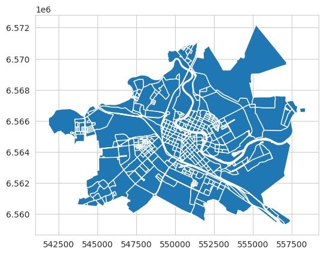
The resulting blocks can be saved to a file.
[ ]:
blocks.to_file('blocks.geojson')
2. Generation of Intermodal Urban Graph
At this stage, you can generate an intermodal graph by passing the blocks GeoDataFrame to GraphGenerator
[ ]:
from blocksnet import GraphGenerator
intermodal_graph = GraphGenerator(territory=blocks).get_graph('intermodal') #вместо intermodal можно передать drive, если необходимо посчитать время по графу дорог
Graph made for 'walk' network type
Graph made for 'bus'
Graph made for 'trolleybus'
Graph made for 'tram'
Graph made for 'subway'
Vizualization of the resulting intermodal graph
[ ]:
GraphGenerator.plot(intermodal_graph)
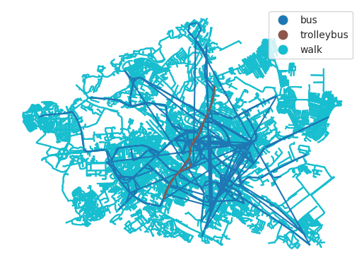
Saving the graph as a geojson file
[ ]:
import osmnx as ox
nodes, edges = ox.graph_to_gdfs(intermodal_graph)
nodes.to_file('graph_nodes.geojson')
edges[['length', 'weight', 'transport_type', 'geometry']].to_file('graph_edges.geojson')
3. Generation of Block Adjacency Matrix
Now, you can build a block adjacency matrix using the blocks layer and intermodal graph acquired on the previous stages. This matrix is obtained by finding the shortest travel time between each pair of blocks in the intermodal graph.
[ ]:
from blocksnet import AdjacencyCalculator
adjacency_matrix = AdjacencyCalculator(blocks=blocks, graph=intermodal_graph).get_dataframe()
Output of the obtained block adjacency matrix.
[ ]:
adjacency_matrix.head()
| 0 | 1 | 2 | 3 | 4 | 5 | 6 | 7 | 8 | 9 | ... | 670 | 671 | 672 | 673 | 674 | 675 | 676 | 677 | 678 | 679 | |
|---|---|---|---|---|---|---|---|---|---|---|---|---|---|---|---|---|---|---|---|---|---|
| 0 | 0.0 | 5.8 | 63.8 | 69.2 | 67.1 | 52.3 | 63.5 | 63.3 | 61.0 | 63.4 | ... | 29.8 | 32.2 | 35.3 | 22.4 | 28.2 | 29.6 | 36.8 | 27.8 | 37.4 | 24.1 |
| 1 | 5.8 | 0.0 | 66.0 | 71.4 | 69.3 | 54.5 | 65.7 | 65.5 | 63.2 | 65.6 | ... | 32.0 | 30.9 | 33.3 | 20.4 | 26.2 | 27.6 | 39.0 | 25.8 | 39.6 | 26.3 |
| 2 | 53.4 | 55.6 | 0.0 | 48.8 | 46.7 | 76.6 | 45.7 | 47.1 | 49.4 | 51.8 | ... | 70.1 | 70.3 | 65.1 | 59.8 | 63.8 | 66.6 | 79.9 | 65.2 | 79.1 | 66.3 |
| 3 | 46.2 | 48.4 | 48.5 | 0.0 | 2.1 | 39.6 | 8.7 | 10.1 | 12.4 | 14.8 | ... | 58.0 | 59.7 | 57.9 | 52.6 | 51.7 | 54.5 | 63.0 | 58.0 | 71.9 | 59.1 |
| 4 | 44.1 | 46.3 | 46.4 | 2.1 | 0.0 | 37.5 | 6.6 | 8.0 | 10.3 | 12.7 | ... | 55.9 | 57.6 | 55.8 | 50.5 | 49.6 | 52.4 | 60.9 | 55.9 | 69.8 | 57.0 |
5 rows × 680 columns
Optionally, save the adjacency matrix as a file.
[ ]:
adjacency_matrix.to_pickle('adjacency_matrix.pickle')
4. Инициализация модели города
Now with the resulting matrix and block layer we can initialize a city model.
[ ]:
from blocksnet import City
vologda = City(
blocks_gdf=blocks,
adjacency_matrix=adjacency_matrix,
)
With print you can get information about the number of blocks in a city, types of city services (by default) and local coordinate reference system For each type of service you can see its name, normative availability in minutes and the value of normative availability per 1000 people (how many people out of 1000 need this type of service).
[ ]:
print(vologda)
CRS: : EPSG:32637
Blocks count : 680
Service types :
3.5.1 school 15 min 120/1000 population
3.5.1 kindergarten 7 min 61/1000 population
3.4.2 hospital 60 min 9/1000 population
3.4.1 polyclinic 10 min 13/1000 population
5.1.3 pitch 60 min 10/1000 population
5.1.2 swimming_pool 30 min 8/1000 population
5.1.1 stadium 30 min 10/1000 population
3.6.1 theatre 60 min 6/1000 population
3.6.1 museum 60 min 1/1000 population
3.6.1 cinema 60 min 9/1000 population
4.2 mall 30 min 8/1000 population
4.4 convenience 5 min 180/1000 population
4.4 supermarket 15 min 900/1000 population
3.7.1 religion 30 min 10/1000 population
4.3 marketplace 30 min 800/1000 population
4.8.1 bowling_alley 60 min 9/1000 population
With this model, you can already perform basic analysis of urban environment. However, for more advanced analysis, information about existing service types should be added. Each of the service objects mush have the following attributes:
geometry -
Pointcapacity -
int, capacity (power) of a service
[ ]:
school = gpd.read_file("/content/school_Vologda.geojson").to_crs(local_crs).rename(columns={'Вместимость':'capacity'})
kindergarten = gpd.read_file("/content/kindergarten_Vologda.geojson").to_crs(local_crs).rename(columns={'Вместимость':'capacity'})
vologda.update_services('school', school)
vologda.update_services('kindergarten', kindergarten)
And information about buildings in the city as well:
geometry -
Pointpopulation -
int, population of a building (non-negative)floors -
float, number of levels in a building (non-negative)area -
float, area of building foundation, in square meters (non-negative)living_area -
float, living area, in square meters (non-negative)is_living -
bool, living (True) or non-living (False)
[ ]:
buildings = gpd.read_file("/content/buildings_vologda.geojson").to_crs(local_crs)
vologda.update_buildings(buildings)
Visualizing our model with blocks and aggregated information
[ ]:
vologda.plot()
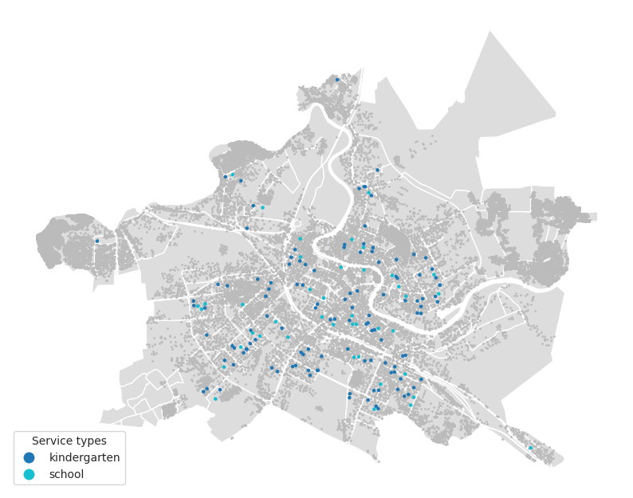
5. Methods for Analysis of Urban Environment
5.1. Accessibility
With the Accessibility class, you can get a layer with information about block accessibility (relative to the chosen block).
[ ]:
block = vologda[135] # choose a block
[ ]:
from blocksnet.method import Accessibility
acc = Accessibility(city_model=vologda)
calc = acc.calculate(block)
calc.head()
| id | geometry | distance | |
|---|---|---|---|
| 0 | 0 | POLYGON ((550762.290 6565038.844, 550768.857 6... | 15.8 |
| 1 | 1 | POLYGON ((550768.857 6565033.563, 550762.290 6... | 19.8 |
| 2 | 2 | POLYGON ((544937.479 6564706.592, 544935.619 6... | 70.9 |
| 3 | 3 | POLYGON ((544806.647 6565359.291, 544814.358 6... | 70.5 |
| 4 | 4 | POLYGON ((544793.346 6565395.228, 544800.150 6... | 68.4 |
Visualization of the resulting accessibility GeoDataFrame
[ ]:
acc.plot(calc)
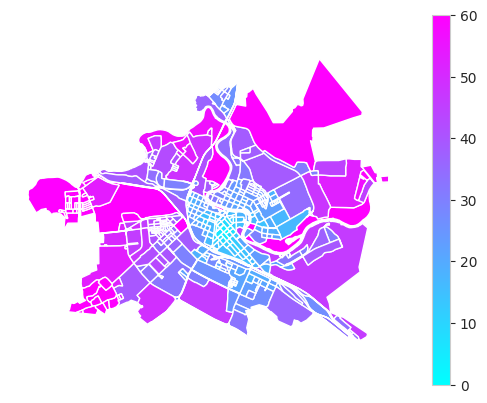
You can also visualize normative availabiility of a selected service type
[ ]:
service_type = vologda['school']
[ ]:
acc.plot(calc, service_type)
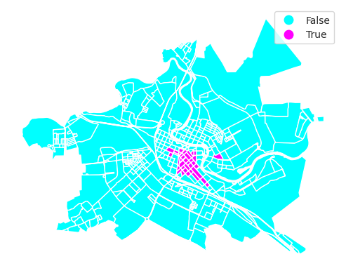
Saving the results to a geojson file
[ ]:
calc.to_file('accessibility.geojson')
5.2. Connectivity
Other methods are used in a similar way. Here is an example of blocks’ transport connectivity calculation using Connectivity class.
[ ]:
from blocksnet.method import Connectivity
conn = Connectivity(city_model=vologda)
calc = conn.calculate()
Visualization of connectivity.
[ ]:
conn.plot(calc)
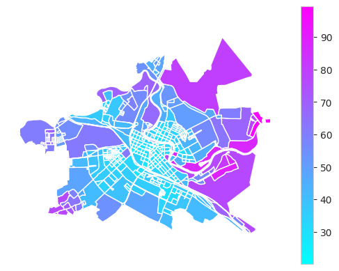
5.3. Service Provision
You can also assess service type provision for any block. Normative capacity and block population are used in assessment.
[ ]:
from blocksnet.method import Provision
prov = Provision(city_model=vologda)
calc_lp = prov.calculate(service_type)
Visualization of service provision.
[ ]:
prov.plot(calc_lp)
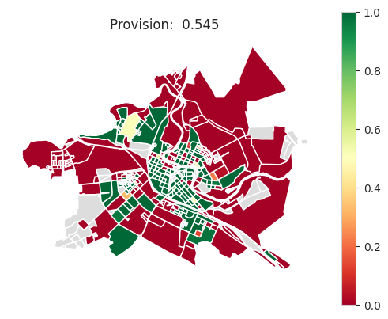
Save result to a file.
[ ]:
calc_lp.to_file('provision_lp.geojson')
You can also use iterative (greedy) method of population distribution for provision assessment.
[ ]:
calc_it = prov.calculate(service_type, method='iterative')
Visualization.
[ ]:
prov.plot(calc_it)
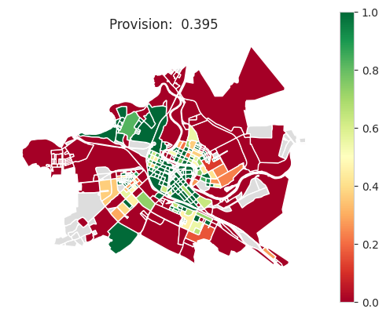
Getting statistical parameters of provision.
[ ]:
Provision.stat_provision(calc_it)
{'mean': 0.5715653412739928,
'median': 0.7559055118110236,
'min': 0.0,
'max': 1.0}
Getting city-wide provision estimate.
[ ]:
Provision.total_provision(calc_it)
0.39514769318355997
Saving results to a file.
[ ]:
calc_it.to_file('provision_lp.geojson')
You can modify parameters of any block and perform provision assessment again. Let’s take a block with id=110 and set its popalation to 1000 people.
[ ]:
import pandas as pd
update = {
110: {
'population': 1000,
}
}
update_df = pd.DataFrame.from_dict(update, orient='index')
[ ]:
calc_update = prov.calculate('school', update_df)
Visualization of provision after modification of block parameters.
[ ]:
prov.plot(calc_update)
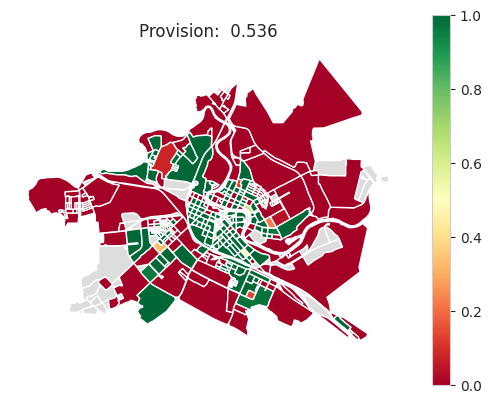
Saving the results as a geojson file.
[ ]:
calc_update.to_file('provision_update.geojson')
[ ]:
prov.plot_delta(calc_lp, calc_update)
/usr/local/lib/python3.10/dist-packages/geopandas/geodataframe.py:1538: SettingWithCopyWarning:
A value is trying to be set on a copy of a slice from a DataFrame.
Try using .loc[row_indexer,col_indexer] = value instead
See the caveats in the documentation: https://pandas.pydata.org/pandas-docs/stable/user_guide/indexing.html#returning-a-view-versus-a-copy
super().__setitem__(key, value)
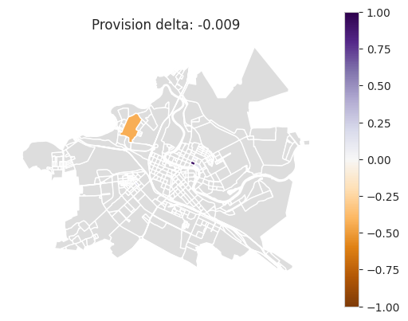
5.4. Method for Optimization of Built Environment Parameters
Selecting the scenario (concept) of city development includes specifiying weights for each of the service types.
[ ]:
scenario = {
'school': 0.6,
'kindergarten': 0.4
}
Assessment of scenario provision.
[ ]:
gdfs, total = prov.calculate_scenario(scenario)
print(total)
0.5961190137320266
Visalization of scenario provision and saving to a file.
[ ]:
for service_type, gdf in gdfs.items():
print(service_type)
prov.plot(gdf)
gdf.to_file(f'provision_{service_type}.geojson')
school
kindergarten

Selection of 15 random blocks to modify.
[ ]:
blocks_gdf = vologda.get_blocks_gdf()
selected_blocks_gdf = vologda.get_blocks_gdf().sample(15)
[ ]:
ax = blocks_gdf.plot(color='#ddd')
selected_blocks_gdf.plot(color='#333', ax=ax)
ax.set_axis_off()
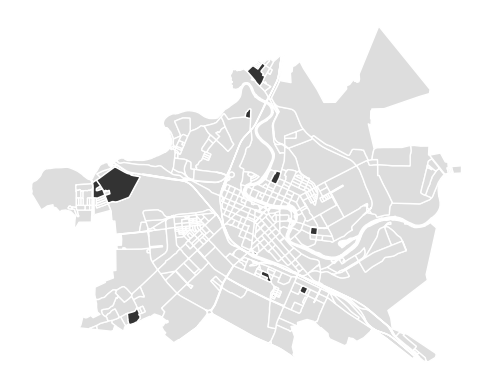
[ ]:
from blocksnet.method import Genetic
gen = Genetic(city_model=vologda, SCENARIO=scenario)
selected_blocks = list(selected_blocks_gdf.index)
res = gen.calculate(comb_len=3, selected_blocks=selected_blocks)
Dictionary acquired after scenario optimization indicates suggested service capacities in the given blocks.
[ ]:
res
{360: {'school': 1350, 'kindergarten': 250},
380: {'school': 550, 'kindergarten': 0},
5: {'school': 900, 'kindergarten': 250},
65: {'school': 550, 'kindergarten': 180},
561: {'school': 250, 'kindergarten': 0},
226: {'school': 1400, 'kindergarten': 0},
54: {'school': 600, 'kindergarten': 280},
10: {'school': 900, 'kindergarten': 0},
290: {'school': 1150, 'kindergarten': 0},
172: {'school': 0, 'kindergarten': 250},
270: {'school': 1950, 'kindergarten': 0},
199: {'school': 1700, 'kindergarten': 280}}
Visualization of the results.
[ ]:
res_df = pd.DataFrame.from_dict(res, orient='index')
res_df.head()
| school | kindergarten | |
|---|---|---|
| 360 | 1350 | 250 |
| 380 | 550 | 0 |
| 5 | 900 | 250 |
| 65 | 550 | 180 |
| 561 | 250 | 0 |
[ ]:
res_blocks_gdf = blocks_gdf.join(res_df, how='left')
Visualization of capacity for suggested schools.
[ ]:
ax = res_blocks_gdf.plot(color='#ddd')
res_blocks_gdf.plot(column='school', cmap='Greens', ax=ax, legend=True)
ax.set_axis_off()
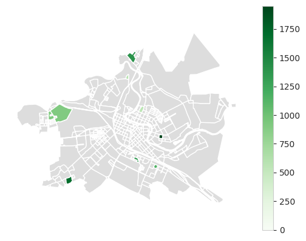
Visalization of capacity for suggested kindergartens.
[ ]:
ax = res_blocks_gdf.plot(color='#ddd')
res_blocks_gdf.plot(column='kindergarten', cmap='Greens', ax=ax, legend=True)
ax.set_axis_off()
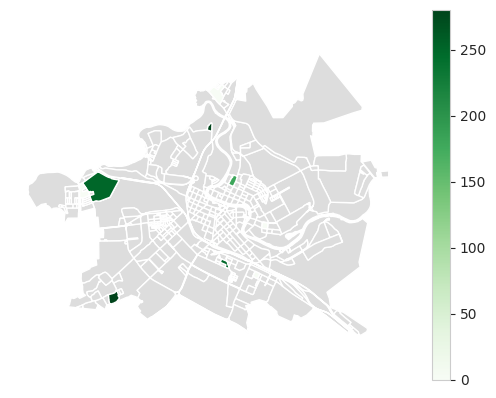
[ ]:
res_blocks_gdf.to_file('update.geojson')
Here we can ensure that the resulting development plan improves service provision for whole city while prioritizing schools.
[ ]:
gdfs, total = prov.calculate_scenario(scenario, res_df)
print(total)
0.6492021778309691
[ ]:
for service_type, gdf in gdfs.items():
print(service_type)
prov.plot(gdf)
gdf.to_file(f'provision_upd_{service_type}.geojson')
school
kindergarten
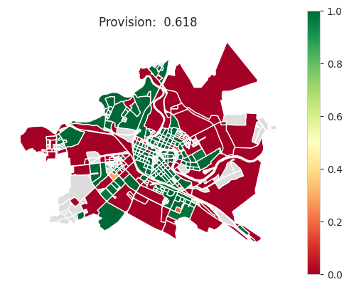
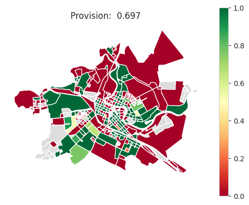